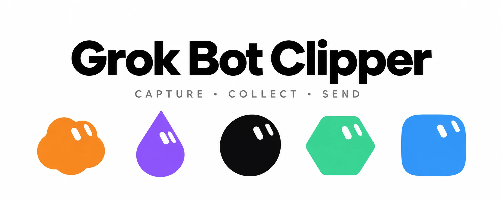

铁柱AGI · 11/60周边生态 Skip to content这里收录围绕 Grok Bot 开发的实用周边工具。浏览器插件Grok Bot Clipper把网页选区、截图和社交内容打包整理，直接交给你的 Bot。查看插件 →微信群助手小铁柱微信群自动化运维管家，提供每日群聊日报与网页精选总结查看服务 → Source: https://bot.fmcat.top/ecosystem/← 更新日志 Grok Bot Clipper →